Методическое пособие №1. Подготовка данных и настройка окружения
Цель занятия
освоить создание виртуального окружения, установку необходимых библиотек и подготовку текстовых данных для RAG-системы
Продолжительность: 4 академических часа
Пошаговая инструкция
Теоретическое введение
Перед началом разработки RAG-системы необходимо настроить рабочее окружение. В этом занятии мы создадим изолированное Python-окружение с помощью модуля venv (встроенный в Python инструмент), установим необходимые библиотеки и подготовим тестовые документы. Мы будем работать с Python-скриптами (файлы .py), которые запускаются целиком из командной строки.
Основные понятия:
- Виртуальное окружение — изолированная среда Python для конкретного проекта, позволяющая избежать конфликтов между версиями библиотек
- Текстовые документы — исходные данные, которые будут составлять базу знаний RAG-системы
- Разбиение на фрагменты (chunking) — процесс деления документов на небольшие смысловые куски для эффективного поиска
Необходимые библиотеки:
- streamlit — для создания веб-интерфейса
- langchain — для работы с LLM и цепочками обработки
- sentence-transformers — для генерации эмбеддингов
- chromadb — для векторной базы данных
- PyPDF2 / python-docx — для чтения PDF и DOCX файлов
Пошаговое выполнение работы
Убедитесь, что Python установлен. Откройте PowerShell и выполните:
python --versionДолжна отобразиться версия 3.10 или выше. Если Python не установлен, скачайте его с официального сайта python.org.
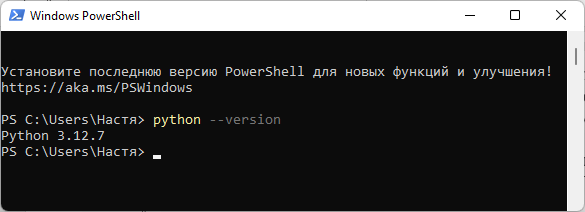
Проверьте наличие менеджера пакетов pip:
pip --version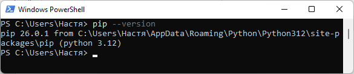
Создайте папку для проекта и необходимые подпапки:
# Перейдите в рабочую папку (например, на рабочий стол)
cd C:\Users\%USERNAME%\Desktop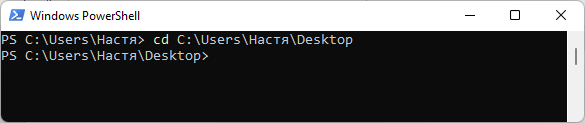
# Создайте папку проекта
mkdir rag_course
cd rag_course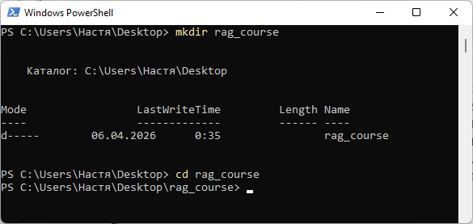
# Создайте подпапки
mkdir documents
mkdir scripts
mkdir data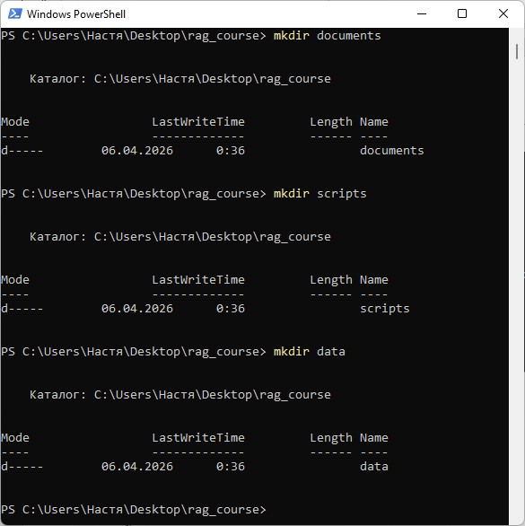
Структура проекта:
C:\Users\%USERNAME%\Desktop\rag_course\ ├── documents\ # Здесь будут храниться исходные документы ├── scripts\ # Здесь будут Python-скрипты └── data\ # Здесь будут сохраняться данные (индексы, эмбеддинги)
В PowerShell выполните команды для создания и активации виртуального окружения:
# Создание виртуального окружения (папка venv появится в проекте)
python -m venv venv# Активация виртуального окружения
.\venv\Scripts\activate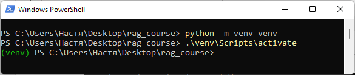
После активации в начале строки PowerShell появится (venv), что означает успешный вход в виртуальное окружение.
Установите все необходимые библиотеки одной командой:
pip install streamlit langchain langchain-community sentence-transformers chromadb PyPDF2 python-docx tiktokenДля проверки установки выполните: pip list
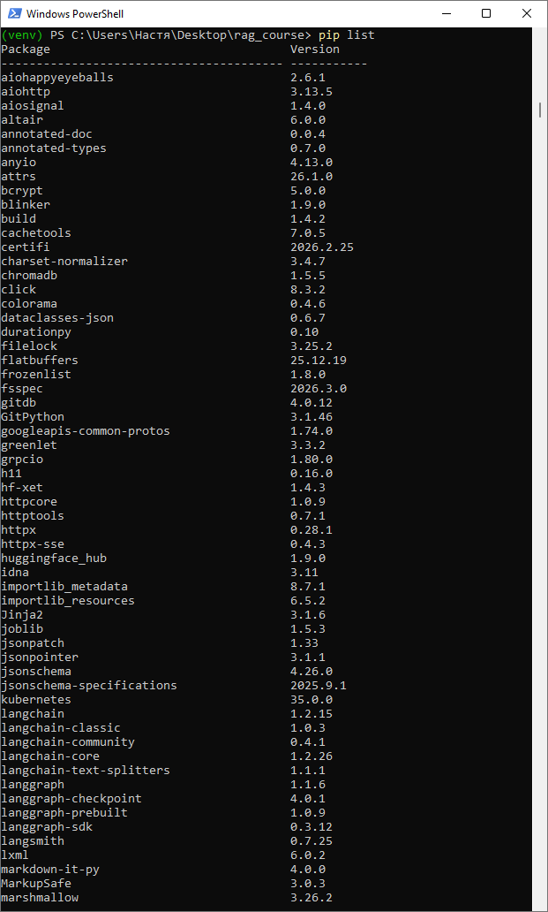
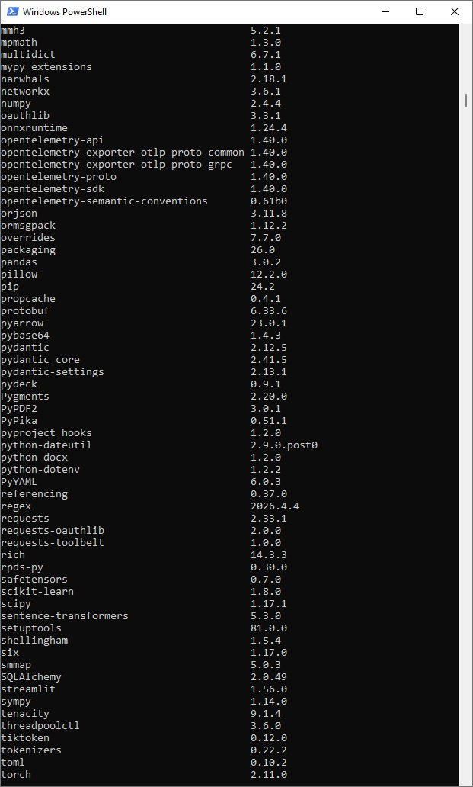
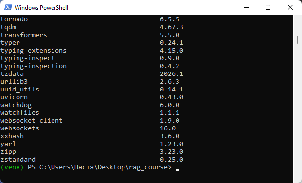
Создайте файл scripts/load_documents.py с помощью любого текстового редактора (VS Code, Notepad++, или Блокнот).
Импортируйте необходимые библиотеки:
import os
from PyPDF2 import PdfReader
from docx import DocumentПодключает модули для работы с файловой системой (os), чтением PDF (PyPDF2) и DOCX (docx).
def load_text_file(filepath):
"""Загрузка текстового файла"""
with open(filepath, 'r', encoding='utf-8') as f:
return f.read()Открывает .txt файл в кодировке UTF-8 и возвращает его содержимое в виде строки.
def load_pdf_file(filepath):
"""Загрузка PDF файла"""
reader = PdfReader(filepath)
text = ""
for page in reader.pages:
text += page.extract_text()
return textСоздаёт объект для чтения PDF, извлекает текст с каждой страницы и объединяет его в одну строку.
def load_docx_file(filepath):
"""Загрузка DOCX файла"""
doc = Document(filepath)
text = ""
for paragraph in doc.paragraphs:
text += paragraph.text + "\n"
return textОткрывает DOCX-документ, проходит по всем абзацам, добавляя их текст с переносом строки, и возвращает результат.
def load_all_documents(documents_folder):
"""Загрузка всех документов из папки"""
documents = []
for filename in os.listdir(documents_folder):
filepath = os.path.join(documents_folder, filename)
if filename.endswith('.txt'):
text = load_text_file(filepath)
documents.append({'text': text, 'source': filename, 'type': 'txt'})
elif filename.endswith('.pdf'):
text = load_pdf_file(filepath)
documents.append({'text': text, 'source': filename, 'type': 'pdf'})
elif filename.endswith('.docx'):
text = load_docx_file(filepath)
documents.append({'text': text, 'source': filename, 'type': 'docx'})
return documentsСканирует указанную папку, для каждого файла определяет тип по расширению, вызывает соответствующую функцию загрузки и сохраняет результат в виде списка словарей (с текстом, именем файла и типом).
if __name__ == "__main__":Убеждается, что код ниже выполнится только при прямом запуске файла (не при импорте как модуля).
docs_folder = "../documents"Задаёт относительный путь к папке на уровень выше от текущей.
if not os.listdir(docs_folder):
with open(os.path.join(docs_folder, "test_doc.txt"), 'w', encoding='utf-8') as f:
f.write("Искусственный интеллект - это область компьютерных наук...")Проверяет, пуста ли папка. Если да - создаёт внутри тестовый .txt файл с примером текста про ИИ.
docs = load_all_documents(docs_folder)Вызывает ранее определённую функцию для загрузки всех поддерживаемых документов и сохраняет результат в переменную docs.
print(f"Загружено документов: {len(docs)}")
for doc in docs:
print(f" - {doc['source']} ({len(doc['text'])} символов)")Печатает общее количество загруженных документов, а затем для каждого - его имя и количество символов в тексте.
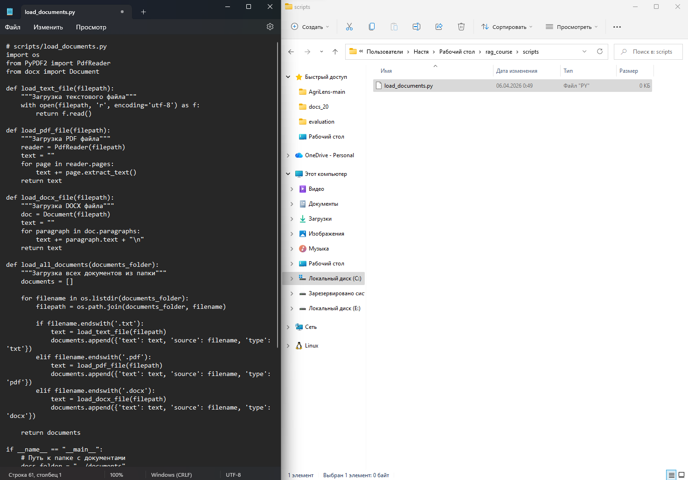
Создайте файл scripts/chunk_documents.py. Импортируйте необходимые модули для разбиения документов:
import os
import json
from langchain_text_splitters import RecursiveCharacterTextSplitterИмпортирует модули для работы с файловой системой, JSON и текстовый сплиттер из библиотеки langchain.
def chunk_documents(documents, chunk_size=500, chunk_overlap=50):
"""Разбивает документы на фрагменты"""
text_splitter = RecursiveCharacterTextSplitter(
chunk_size=chunk_size,
chunk_overlap=chunk_overlap,
separators=["\n\n", "\n", ". ", " ", ""]
)
all_chunks = []
for doc in documents:
chunks = text_splitter.split_text(doc['text'])
for i, chunk in enumerate(chunks):
all_chunks.append({
'text': chunk,
'source': doc['source'],
'chunk_id': i,
'length': len(chunk)
})
return all_chunksСоздаёт сплиттер с заданными параметрами (размер фрагмента 500 символов, перекрытие 50), затем для каждого документа разбивает текст на фрагменты и сохраняет каждый фрагмент в виде словаря с текстом, источником, индексом и длиной.
def save_chunks_to_file(chunks, output_path):
"""Сохраняет фрагменты в JSON файл"""
with open(output_path, 'w', encoding='utf-8') as f:
json.dump(chunks, f, ensure_ascii=False, indent=2)Открывает файл по указанному пути и сохраняет список фрагментов в формате JSON с отступами для читаемости.
if __name__ == "__main__":Проверяет, запущен ли скрипт напрямую, а не импортирован как модуль.
from load_documents import load_all_documentsИмпортирует функцию load_all_documents из файла load_documents.py.
docs = load_all_documents("../documents")Вызывает функцию загрузки всех документов из папки documents (на уровень выше).
chunks = chunk_documents(docs)Применяет функцию разбиения к загруженным документам с параметрами по умолчанию.
save_chunks_to_file(chunks, "../data/chunks.json")Сохраняет полученные фрагменты в файл chunks.json в папке data.
print(f"Создано фрагментов: {len(chunks)}")Печатает общее количество созданных фрагментов.
print(f"Средняя длина фрагмента: {sum(c['length'] for c in chunks)/len(chunks):.0f} символов")Вычисляет и печатает среднюю длину фрагмента в символах, округлённую до целого числа.
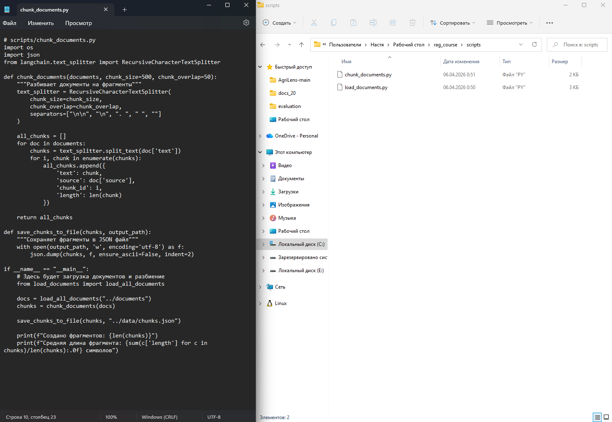
Запустите созданные скрипты из PowerShell:
# Перейдите в папку со скриптами
cd scripts
# Запустите скрипт загрузки документов
python load_documents.py
# Запустите скрипт разбиения на фрагменты
python chunk_documents.py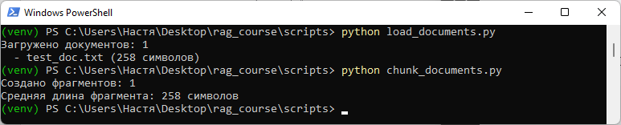
Задание для самостоятельного выполнения
- Добавьте в папку documents 3-5 текстовых файлов (можно скачать статьи с Википедии или использовать любые тексты).
- Измените параметры разбиения: попробуйте chunk_size=300 и chunk_size=1000. Сравните количество полученных фрагментов.
- Добавьте в скрипт chunk_documents.py сохранение статистики в CSV файл (количество фрагментов по каждому документу).
- Напишите функцию, которая выводит на экран первые 200 символов каждого фрагмента для визуальной проверки качества разбиения.
Контрольные вопросы
- Зачем нужно виртуальное окружение и как его создать?
- Какие форматы документов поддерживает ваша система загрузки?
- Почему документы разбиваются на фрагменты, а не индексируются целиком?
- Что означают параметры chunk_size и chunk_overlap?
- Как проверить, что библиотеки установлены корректно?
Критерии оценки
| Критерий | Баллы |
|---|---|
| Создано виртуальное окружение и установлены библиотеки | 2 |
| Создана правильная структура папок проекта | 1 |
| Реализована загрузка документов разных форматов | 1 |
| Реализовано разбиение на фрагменты | 1 |
| Сохранение результатов в JSON/CSV | 1 |
| Выполнено дополнительное задание | 4 |
Максимальный балл: 10